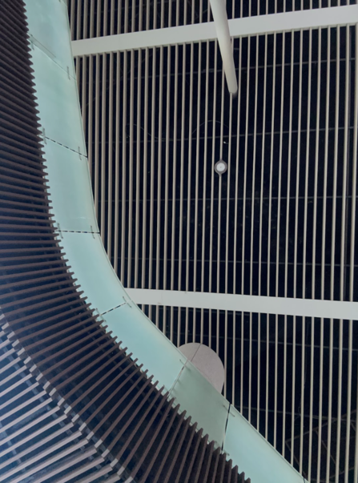
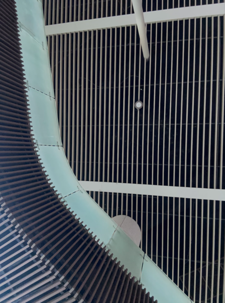
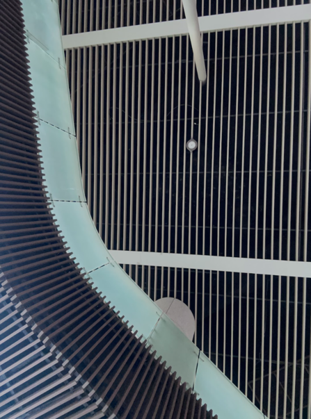

4. 면(Plane)
면은 둘러싸인 선이 만들어내는 평면적 영역을 가리키는 조형예술의 요소입니다.
하나의 곡선 또는 세 개 이상의 직선이 만나고 교차하여 형성되는 부분으로, 일반적으로 2차원적인 시각적 요소로 사용됩니다.
면은 원, 삼각형, 사각형, 타원 등 기하학적 모양(Shape)과 나뭇잎, 구름 모양 등 다양한 유기적인 모양(Shape)으로 만들어질 수 있습니다.
점과 선이 가지고 있는 위치, 방향, 길이에 추가적으로 면적을 가지고 있으며, 면의 크기에 따라 비례가 느껴지게 됩니다. 평면에 표현되는 사물의 외형은 면에 해당되며, 구조와 부피를 가지고 있는 형태(Form)과 구분됩니다
